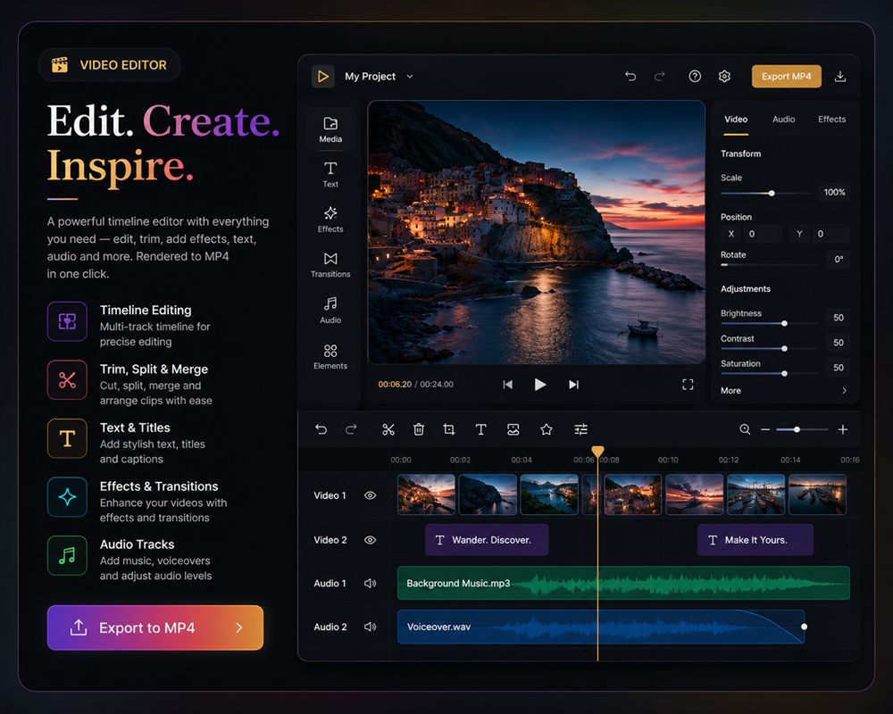
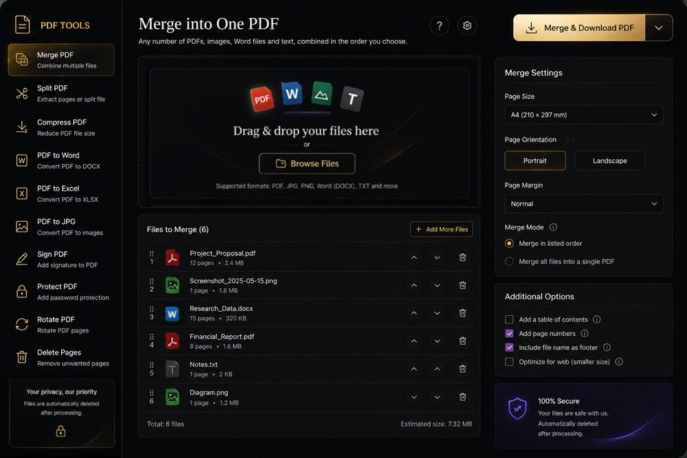
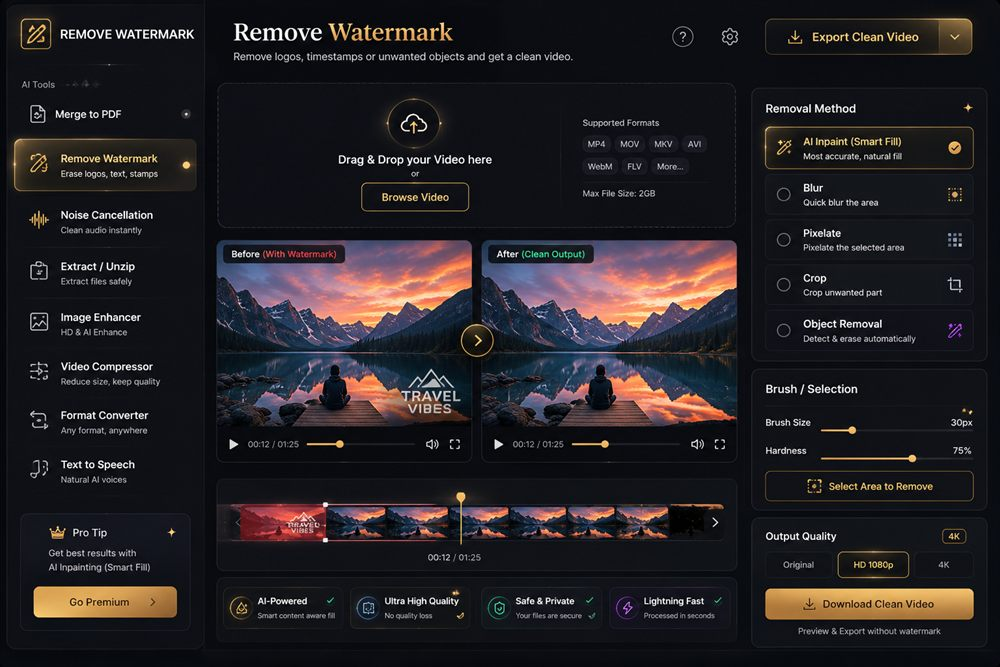
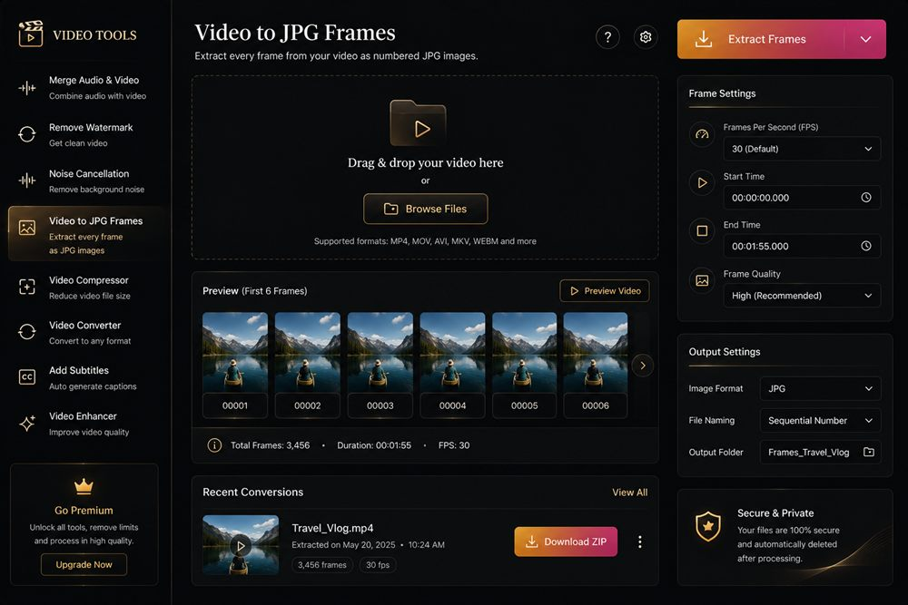
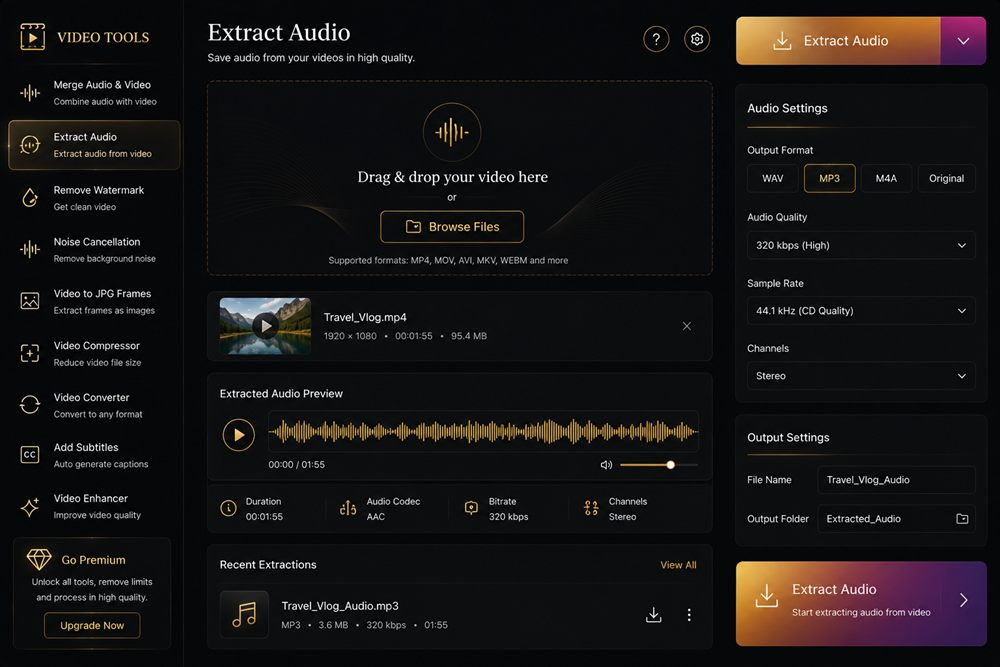
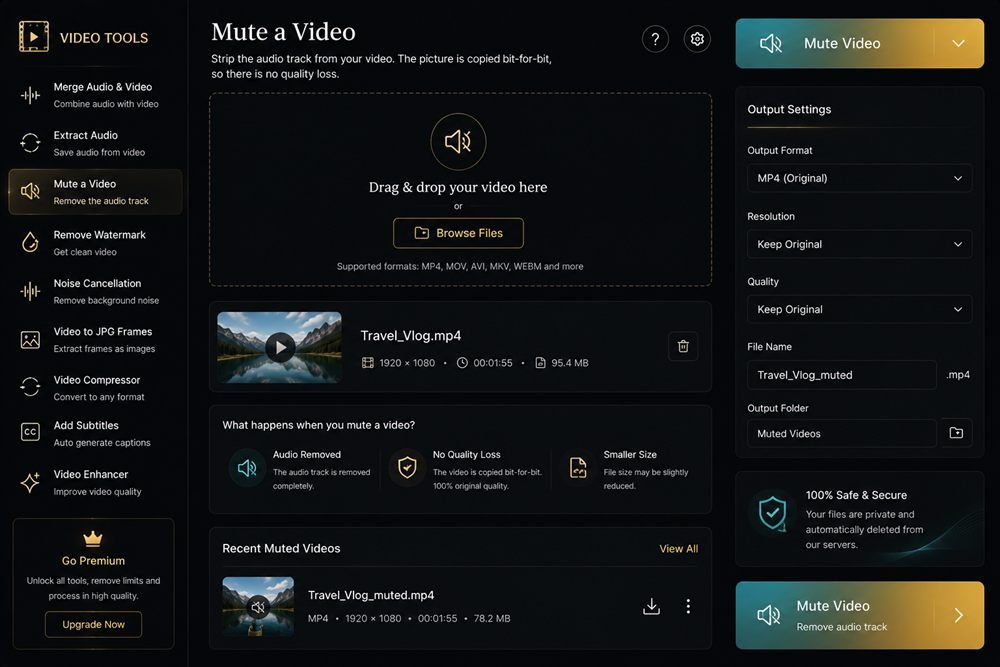
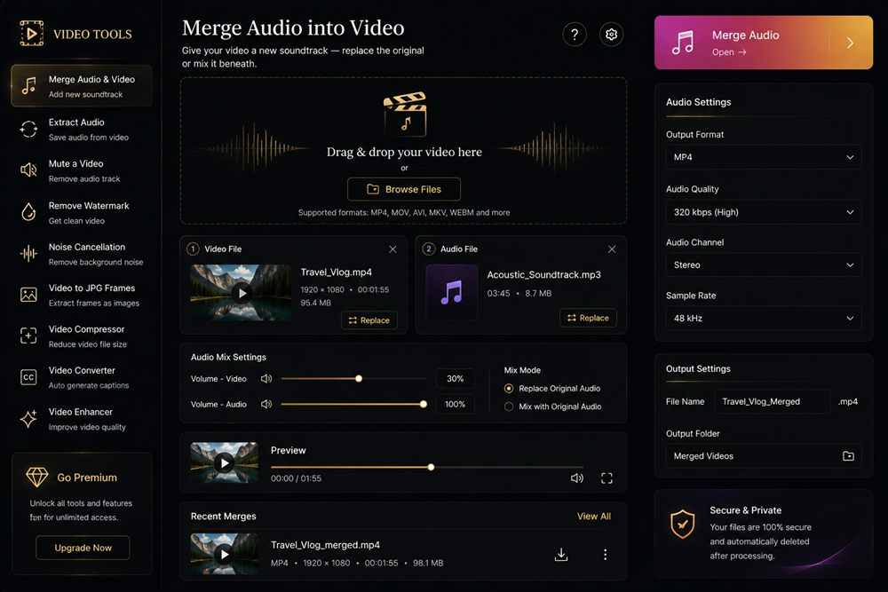
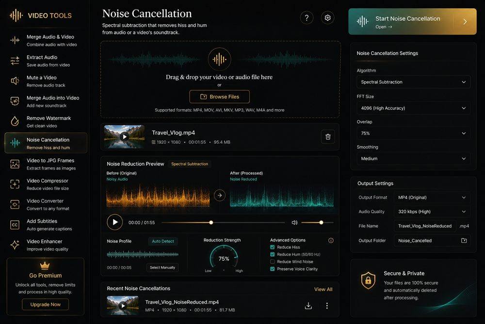
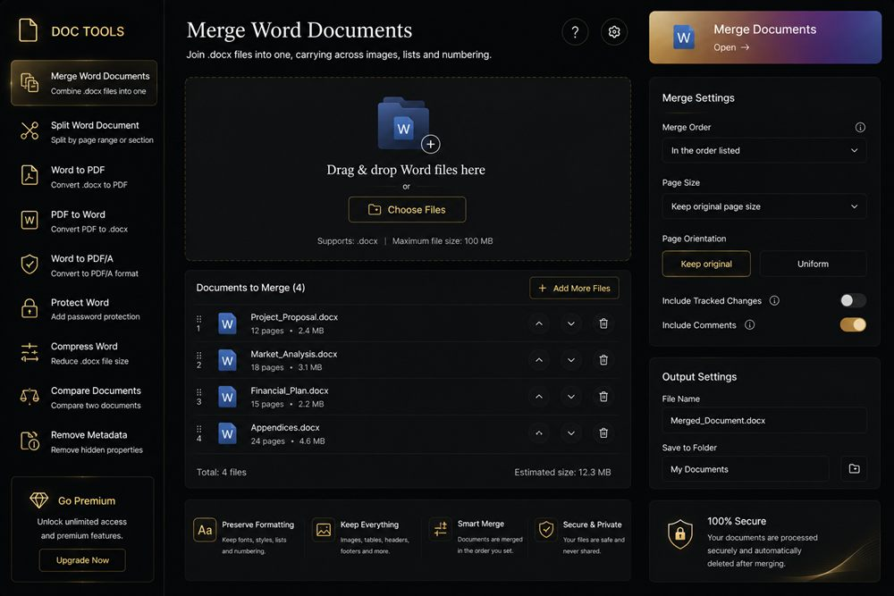
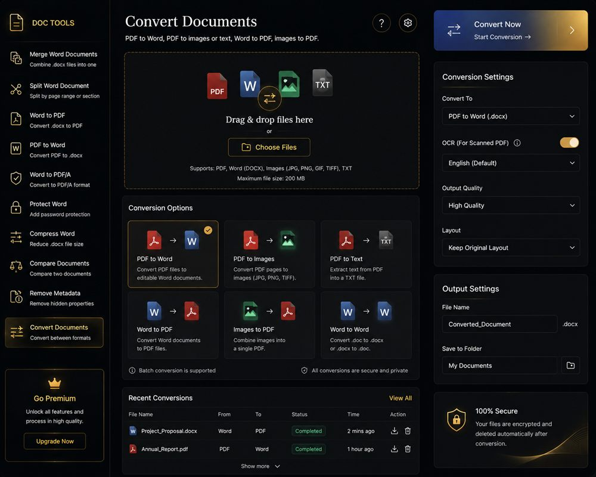

A timeline editor, watermark removal, frame extraction, audio work and document conversion — ten tools that run inside your browser. No account, no upload, no server ever sees your footage.
ScrollCapabilities
Every tool here exists because it had a job to do. Each one processes your files on your own machine, at full quality, and tells you plainly what it can and cannot do.
Drag video, audio and stills onto layered tracks. Trim by the edge, split at the playhead, move clips between tracks, and watch the result compose live.
Box the logo or the burned-in timestamp and choose how it goes: inpainted from the surrounding pixels, blurred, pixelated, or cropped away entirely.
Pull a clip apart into numbered JPEGs at any frame rate and download the lot as a single archive. The frames behind this page came out of it.
Merge anything into one PDF, join Word files, or convert between them — with structure preserved rather than flattened into a picture.










Craft
Not a marketing line — an architectural fact. There is no upload endpoint in this application. Decoding, processing and encoding all happen in your browser, which is why it still works with the network unplugged.
The collection
Pick one and it opens in place. Your files never move off the machine.